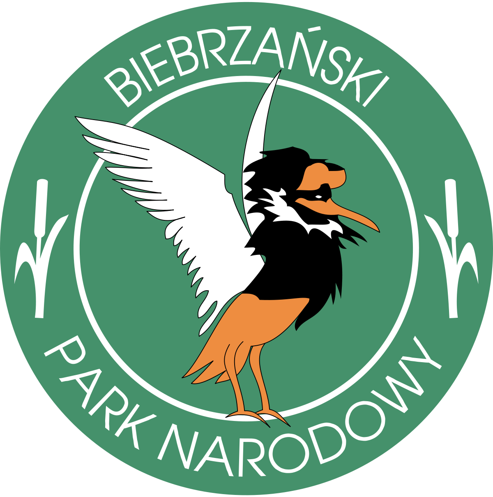
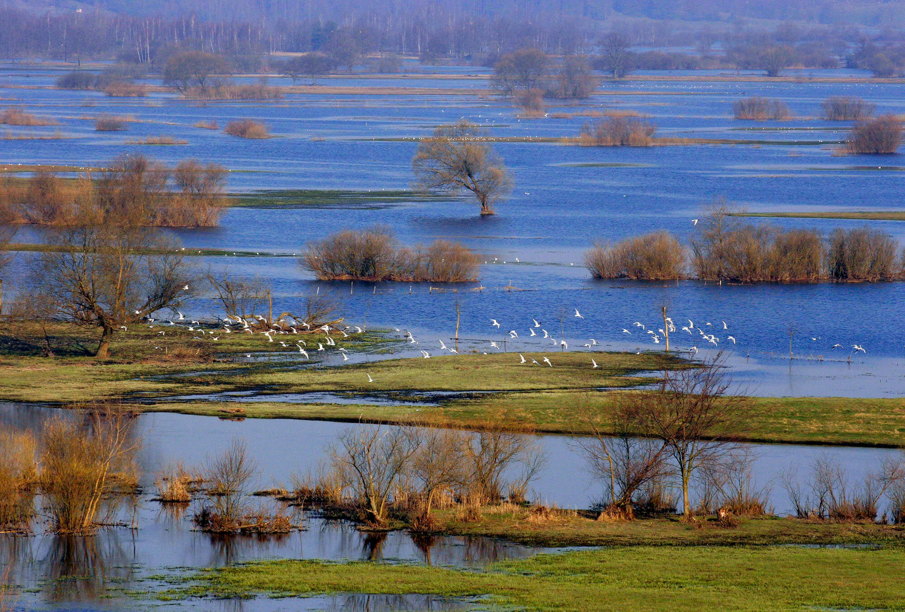
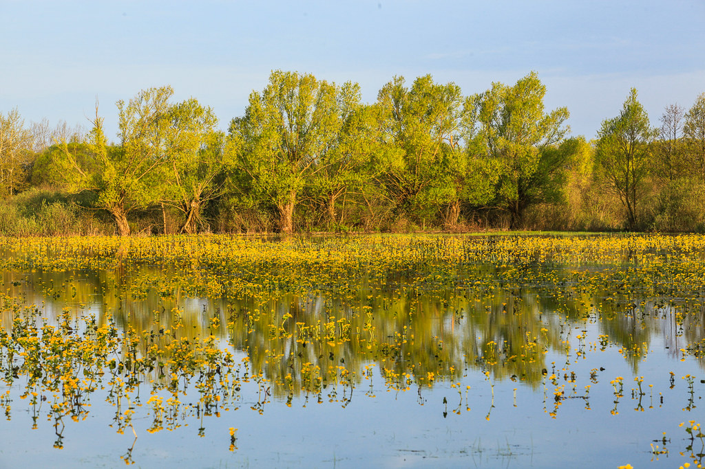
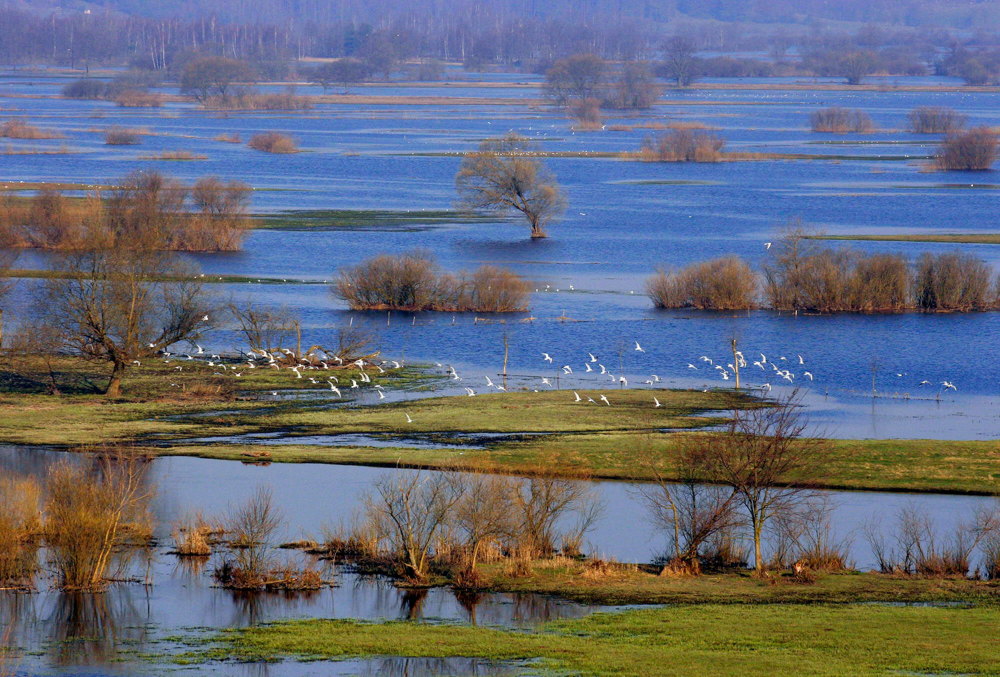
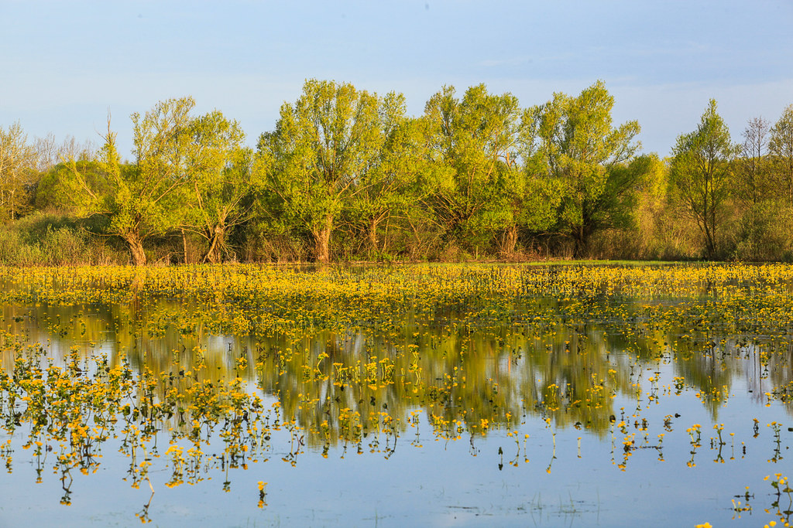

Biebrzański Park Narodowy
Park został utworzony 9 września 1993 roku. Jest największym Parkiem Narodowym w Polsce, jego powierzchnia to 592,23 km². Jest on położony w północno wschodniej Polsce, w województwie podlaskim. Niemal cała rzeka Biebrza znajduje się pod ochroną, od jej źródeł, aż do ujścia do Narwi, łącznie około 155 km2. Symbolem parku jest wędrowny ptak – batalion, zwany również bojownikiem. Na biebrzańskich bagnach można spotkać aż 271 gatunków ptaków. Wiele z nich tu żeruje oraz odpoczywa podczas corocznych wędrówek. Największym ssakiem Biebrzańskiego Parku Narodowego jest łoś! Szacuje się, że jest ich tutaj nawet 400 sztuk. W roku 2020 w wyniku katastrofalnego pożaru spłonęła spora część tego przyrodniczego cudu.
 


